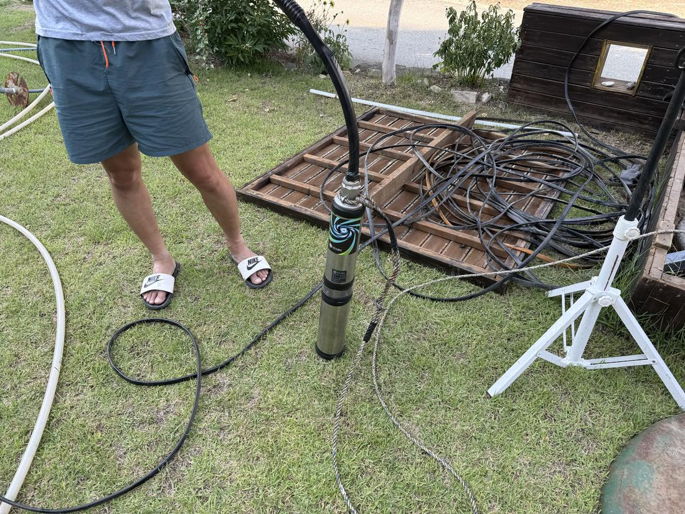
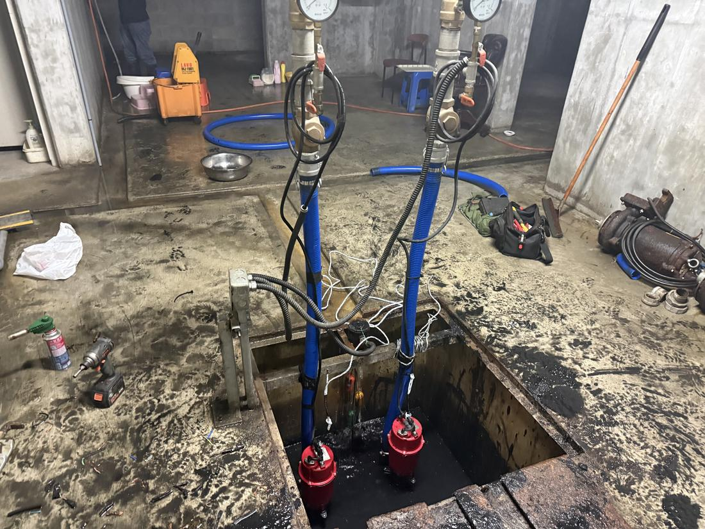
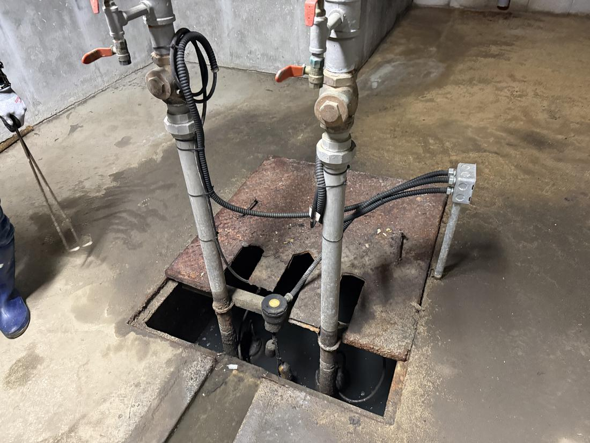
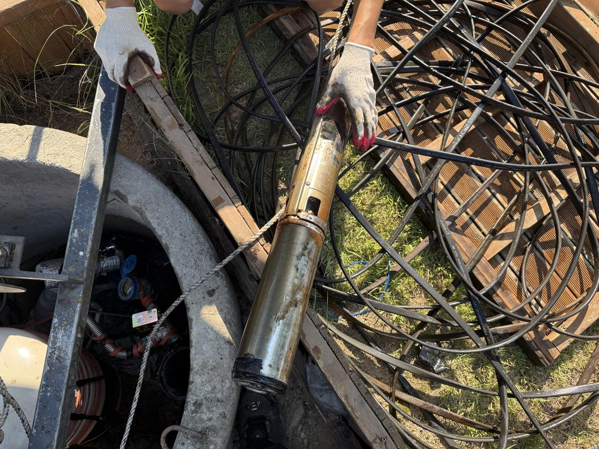
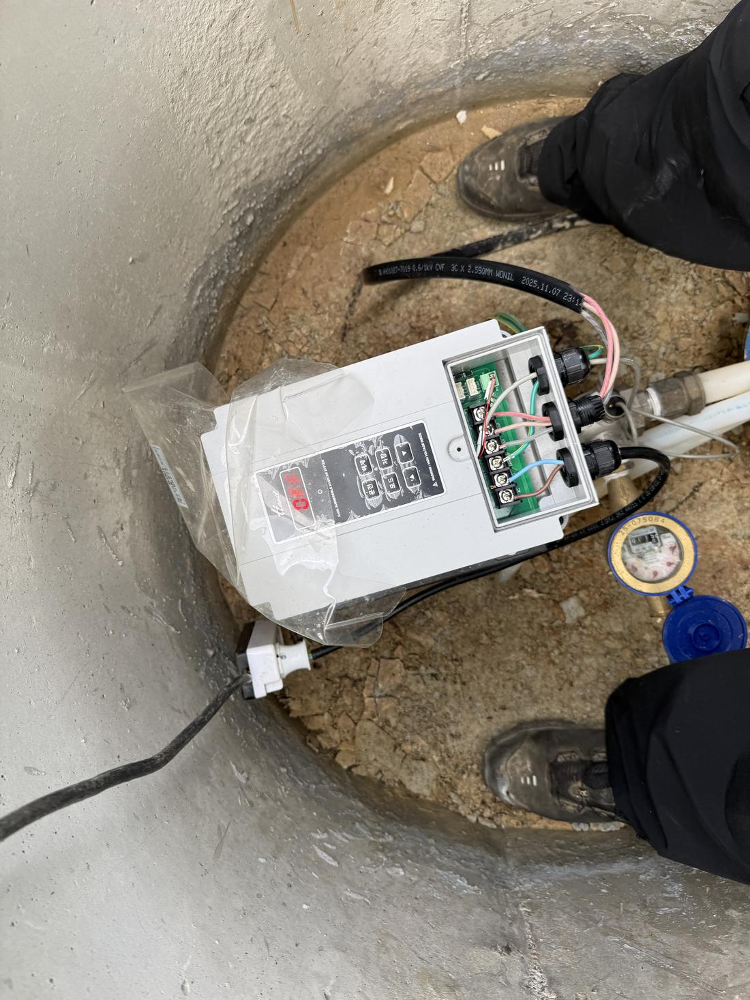

마당 수중모터 인양, 절연 측정 후 신품 교체
인양 작업 중 절연저항을 측정해 소손 여부를 확인하고, 용량에 맞는 신품으로 교체했습니다.
아파트 27층 높이에 해당하는 심도까지 인양 장비를 갖추고 대응합니다. 여주시 산간 관정에서도 동일한 장비로 작업합니다.
증상만 정확히 말씀해 주시면 전화로 원인을 절반 이상 좁힐 수 있습니다. 헛출장 없이, 필요한 부품을 챙겨서 갑니다.
모터 소손, 수위 저하, 압력스위치·배관 문제까지 원인이 다양합니다. 현장 진단이 가장 빠릅니다.
압력탱크 공기압 저하, 배관 스케일, 모터 마모가 흔한 원인입니다.
누전·절연 저하 신호일 수 있습니다. 절연저항 측정으로 모터 수명을 미리 판단해 드립니다.
웅- 소리만 나고 물이 약하거나, 모터가 수시로 켜졌다 꺼진다면 교체 전에 점검이 필요합니다.
여주 외곽 산간 지역은 보온 관리가 특히 중요합니다. 배관·압력탱크 동파 수리와 월동 시공을 함께 합니다.
단순 교체 영업이 아니라, 살릴 수 있는 모터는 살리고 바꿔야 할 모터만 바꿉니다. 견적은 작업 전에 먼저 말씀드립니다.
심정·천정 수중펌프, 가압펌프, 인버터, 압력탱크, 제어반까지 계통 전체를 봅니다.
수중 80m 이상 산간 심정도 인양 장비를 갖추고 당일 교체합니다.
여주읍·가남읍 아파트·상가는 물이 끊기면 민원으로 직결됩니다. 시즌 전 점검으로 미리 막습니다.
세종대왕면·대신면·강천면 등 산간 외곽은 보온 관리가 특히 중요합니다.
여주읍 등 아파트와 상가는 지하 피트 배수펌프 고장·교체 수요가 꾸준합니다. 지하수 계통과 함께 배수 계통까지 한 번에 해결합니다.


여름철 낙뢰·서지(surge)로 인버터나 제어반 기판이 손상되는 사고가 매년 발생합니다. 무작정 교체하기 전에 피해 원인을 먼저 진단하고, 보험으로 보상 가능한 경우 접수에 필요한 자료까지 안내해 드립니다.
※ 보험 가입 내용에 따라 보상 가능 여부가 다르며, 최종 접수·심사는 가입하신 보험사를 통해 진행됩니다.
여주읍·가남읍 시내권부터 세종대왕면·강천면·산북면 산간 외곽까지, 여주 어디든 출동합니다. 권역별 예상 소요시간은 접수 시 정직하게 안내합니다.
| 여주읍 · 가남읍 · 흥천면 | 여주 시내 밀집 권역으로, 오전 접수 시 당일 방문이 원칙입니다. | 당일 출장 |
| 점동면 · 금사면 · 북내면 | 시내권과 마찬가지로 당일 출장을 원칙으로 움직입니다. | 당일 출장 |
| 세종대왕면 · 대신면 · 강천면 · 산북면 | 산간·외곽 권역은 당일~예약제로 방문하며, 긴급 건은 전화로 우선 조율합니다. | 예약 출장 |
| 이천시 · 양평군 · 광주시 · 원주시 | 여주 인접 시·군도 함께 커버합니다. 출장 일정을 묶으면 출장비를 낮출 수 있습니다. | 인접 권역 |
※ 이 외 지역도 애매하면 일단 전화 주세요. 가능 여부와 예상 시간을 바로 안내해 드립니다.
측정값과 사진이 남는 작업만 사례로 올립니다.

인양 작업 중 절연저항을 측정해 소손 여부를 확인하고, 용량에 맞는 신품으로 교체했습니다.

절연저항 측정으로 소손 확인, 용량에 맞는 신품 교체 후 토출량 정상 확인.

단자대 배선 상태와 수위센서 신호를 확인하고 운전 정상 여부까지 확인 후 마무리.
현장에서 갑자기 금액이 커지는 일이 없도록, 접수 단계에서 예상 범위를 안내합니다.
무료. 증상을 들어보고 출장이 필요한지, 자가 조치가 가능한지 먼저 판단해 드립니다.
권역별로 정해진 출장비를 접수 시 안내합니다. 수리를 진행하면 출장비는 수리비에 포함됩니다.
현장 진단 후 작업 전에 견적을 먼저 확정합니다. 동의 없이 진행하는 작업은 없습니다.
※ 심정 인양·교체는 관정 깊이와 펌프 용량에 따라 달라 전화 상담 시 예상 범위를 안내드립니다.
여주 전 지역, 시내부터 외곽까지 9년 경력 기술자가 직접 출동합니다.